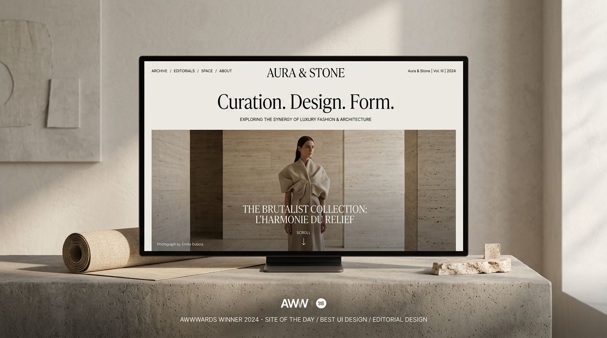

04 / DEEP DIVES
ENGINEERING & IMPACT PROOFS // 12 CASE STUDIES
Behind the architecture.
Measurable outcomes.
True luxury is felt in responsiveness, technical precision, and commercial momentum.
Discover how we engineer bespoke digital platforms that outperform competition.
CASE STUDY 02 // ARCHITECTURAL HARDWAREMILAN · DUBAI · MUMBAI
Engineering a real-time photometric lighting simulator enabling interior designers to visualize beam angles and color temperatures directly in browser.
Traditional PDF catalogs failed to communicate the mood, Kelvin color warmth, and optical dispersion of Auri's bespoke lighting fixtures to global architects.
02 / Engineering
GPU-Accelerated Shader Simulation
We developed a custom GLSL fragment shader simulating inverse-square light falloff and Kelvin color blending across 3D room presets, running smoothly even on mobile devices.
03 / The Outcome
Commercial Architecture Spec Growth
Auri experienced a 210% surge in commercial specification sheet downloads by luxury hotels and retail flagship builders across EMEA.
Luxxe Labels had high-end designer apparel but was hosted on a slow template that felt generic and suffered from friction during mobile checkout.
02 / Engineering
Next.js Headless Commerce & Micro-Cart Animations
We built a decoupled headless architecture with instant client-side route transitions, animated slide-out bag drawers, and frictionless 1-click payment gateways.
03 / The Outcome
Record Collection Sellouts
The re-engineered storefront drove immediate revenue gains, with their flagship bridal and pret collections selling out in record time.
CASE STUDY 04 // CIVIL INFRASTRUCTUREPUNE · MUMBAI
Virats BuildTech — Interactive 3D Canvas & Institutional Prestige
A digital engineering platform featuring an interactive 3D structural blueprint canvas and live municipal project milestone tracking.
Virats BuildTech executes highways, bridges, and commercial infrastructure, but their online identity failed to reflect their engineering scale and safety standards.
We designed a tactile dark-mode industrial design system with an interactive 3D blueprint model that users can manipulate to inspect structural layers in real time.
03 / The Outcome
High-Stakes Tender Wins
The portal established Virats BuildTech as the premier infrastructure contractor in western India, directly supporting multiple municipal tender bids.
CASE STUDY 05 // EDITORIAL PHOTOGRAPHYAUSTIN, TEXAS · WORLDWIDE
Cory Ryan — Editorial Imagery & Texas Hill Country Romance
High-contrast gallery experience capturing Austin love stories, high-fashion editorials, and commercial shoots with sub-second image rendering.
High-resolution photography portfolios often stutter and freeze during mobile scrolling. Cory Ryan needed silky-smooth image delivery without quality compromises.
02 / Engineering
AVIF Smart Pre-Decoding & Dynamic Mood Lighting
We implemented an asynchronous image decoding pipeline that streams adaptive AVIF fragments seamlessly as the user scrolls, paired with dynamic ambient mood glowing.
03 / The Outcome
Season Fully Booked in Advance
Cory Ryan booked out her entire wedding and commercial editorial season within three months of the new platform launch.
CASE STUDY 06 // CINEMA & MEDIA PRODUCTIONMUMBAI · GOA
The Face Craft Studio — Dark Atmosphere & Cinematic Media Hub
High-impact commercial photography, campaign video production showcase, and talent booking platform with dark cinematic atmosphere.
High-end production studios struggle with video buffering on standard web hosts. The Face Craft required instant 4K showreel previews and frictionless talent discovery.
02 / Engineering
Adaptive HLS Streaming & WebGL Film Grain
We integrated edge-cached HLS adaptive bitrate streaming with a customized analog film grain shader overlay, creating a true theatrical viewing experience in the browser.
03 / The Outcome
Premier Brand Campaign Contracts
The studio secured long-term creative retainers with premier fashion labels and OTT video production houses.
CASE STUDY 07 // PERFORMANCE FITNESSMUMBAI · THANE
Power Gold Gym — High-Energy Athletic Portal & Automated Lead Intake
High-energy membership portal, interactive workout schedule manager, and automated athlete lead intake system with kinetic brutalist typography.
Power Gold Gym was losing prospective gym members due to slow PDF schedules and uncoordinated social media direct messages.
02 / Engineering
Kinetic CSS Grid & WhatsApp Automation Hook
We designed a high-contrast dark brutalist interface with dynamic training schedules and an automated WhatsApp CRM lead pipeline that alerts gym managers within 30 seconds of form submission.
03 / The Outcome
Rapid Gym Floor Expansion
The gym doubled its active monthly membership base within four months, prompting the opening of a second training facility.
CASE STUDY 08 // HEALTHCARE & MEDICALMUMBAI · NAVI MUMBAI
Vedant Hospital — Patient-Centric Health Sanctuary & Doctor Discovery
Patient-first hospital portal featuring instantaneous doctor discovery, department triage, and streamlined appointment bookings.
Confusing Healthcare Navigation During Emergencies
Patients and families visiting hospital websites need instantaneous clarity, emergency department access, and straightforward doctor booking without confusing clutter.
02 / Engineering
Semantic Healthcare Triage & Instant Doctor Index
We engineered an ultra-accessible, calming UI with instant client-side doctor filtering by speciality, emergency hotline triggers, and DPDP-compliant booking forms.
03 / The Outcome
Streamlined Patient Care Delivery
Vedant Hospital reduced front-desk phone congestion by 65% while increasing scheduled doctor consultations across 14 clinical departments.
We designed an authoritative educational portal featuring interactive stream roadmaps, faculty credentials, and an automated entrance test registration system.
03 / The Outcome
Full Cohort Enrollment
Gravity achieved 100% seat occupancy for their advanced science and commerce batches within weeks of the digital re-launch.
CASE STUDY 10 // EDUCATIONAL INSTITUTEDOMBIVLI · MUMBAI
Gurukul Study Center — Digital Learning Hub & Curriculum Guides
Digital knowledge hub, faculty profiles, and automated parent inquiry pipelines engineered for maximum clarity and speed.
Bridging Heritage Values with Modern Digital Reach
Gurukul Study Center has a rich tradition of disciplined teaching, but lacked an online presence capable of communicating their modern digital classrooms and study library.
02 / Engineering
Warm Editorial Typography & Lead Dispatch
We developed a clean editorial layout blending traditional educational gravitas with sub-second page performance, featuring downloadable curriculum PDFs and instant CRM lead sync.
03 / The Outcome
High-Trust Parent Engagement
The institute saw a 315% increase in verified parent inquiry submissions and filled its academic library slots for the semester.
CASE STUDY 11 // HOLISTIC WELLNESSMUMBAI · GOA · RISHIKESH
Wellness brands often get saddled with generic corporate layouts that clash with the tranquil, mindful ethos of yoga and spiritual retreats.
02 / Engineering
Organic Timber Tones & Ambient Transitions
We created an organic, sunlit design language with subtle ambient light gradients, intuitive daily schedule selectors, and direct retreat booking integrations.
03 / The Outcome
Sold-Out Seasonal Retreats
Yogi's Yoga sold out its winter Goa wellness retreats within 48 hours of releasing booking slots through the new platform.
CASE STUDY 12 // AESTHETICS & ACADEMYMUMBAI · THANE
Kamini Beauty Academy — Luxury Bridal Aesthetics & Course Bookings
Certified professional makeup academy portal, luxury bridal makeover portfolio, and automated salon appointment booking.
Bridal makeover decisions require pristine image clarity. Kamini Beauty needed an opulent editorial aesthetic that loaded instantaneously on mobile phones.
02 / Engineering
Illuminated Mirror UI & WhatsApp Booking Hooks
We designed a luminous beauty studio layout featuring interactive bridal before/after showcases, certified academy course modules, and instant WhatsApp appointment triggers.
03 / The Outcome
Record Wedding Season Bookings
Kamini Beauty booked over 120 wedding makeover packages and filled all certified professional makeup academy batches for the year.
CASE STUDY 12 // ARCHITECTURE & SPATIALMUMBAI · LONDON
Atelier One — Spatial Storytelling & Zero-Latency Portfolio
How we transformed an international architectural practice into an immersive digital atelier with WebGL material explorations and sub-second asset delivery.
Concept · WebGL Architectural Prototype

99
Google Lighthouse Performance Score
0.38s
First Contentful Paint (FCP) Global CDN
+340%
Increase in High-Net-Worth Client Inquiries
01 / The Challenge
Heavy Media Bloat & Lost Prospects
High-end architecture firms depend heavily on 4K renders, structural blueprints, and photography.
The previous website took over 4.8 seconds to load on mobile networks, causing high bounce rates among prospective luxury developers.
02 / Engineering
Progressive Asset Streaming & WebGL Canvas
We architected a custom image optimization pipeline with AVIF/WebP srcset generation, coupled with GSAP scroll choreography that initiates asset pre-decoding offscreen.
A custom WebGL canvas allowed interactive lighting sweeps across architectural elevations.
03 / The Outcome
Multi-Million Dollar Contract Conversions
Atelier One secured four tier-one real estate contracts within 60 days of launch, attributing the conversion directly to the immersive and responsive presentation of their past works.